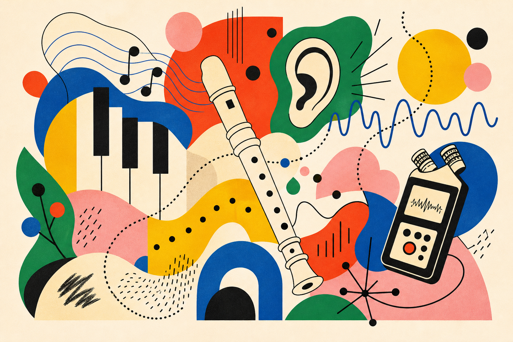
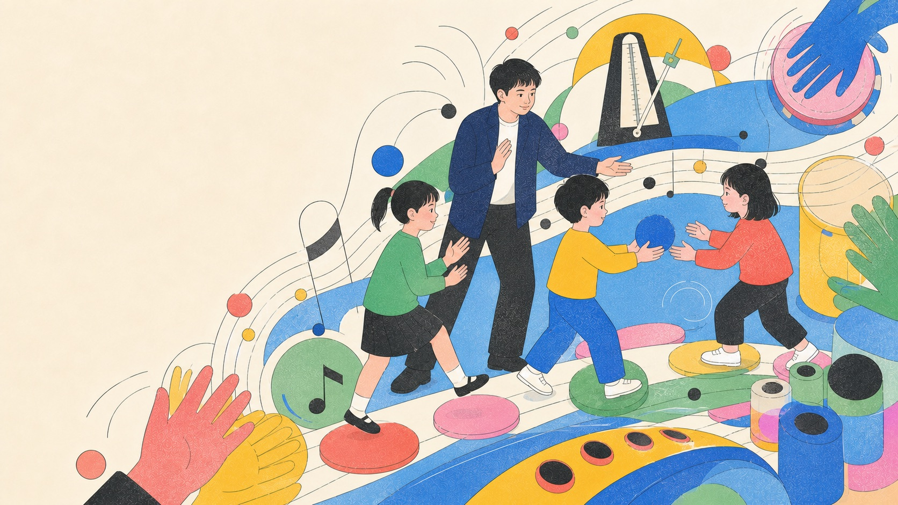
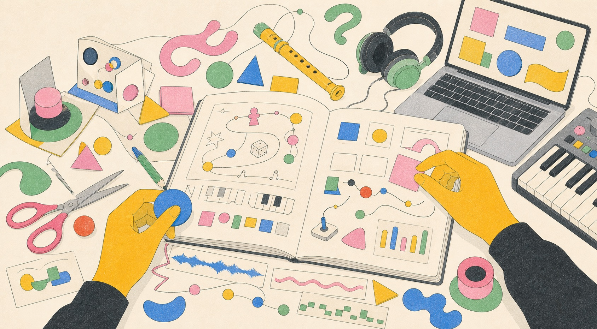

▶
PLAY
直接使用
多數網頁遊戲不需安裝；打開瀏覽器、接上投影，就能開始。
把教室裡孩子卡住的地方，做成可以玩、可以聽，也可以一起改造的聲音經驗。
 Move to stir the sound field
Original visual / Dato 2026
Move to stir the sound field
Original visual / Dato 2026
我不從「還能加什麼科技」開始，而是從孩子怎麼聽、怎麼動、在哪裡失去參與感開始。互動只是後押；真正的主題一直是學習與表達。
從身體節奏、直笛音高到多人讀譜；每件作品都從一個真實的課堂摩擦開始。

聽見永順｜聲景島大冒險

直笛動力飛行任務 RecorderPlane

五線譜拔河賽 Music Tug-of-War
以聲景採集與文化策展為核心，帶領學習者穿越 13 個據點，從聆聽、錄音、選段到展件製作。互動網站現已部署；課堂歷程與影響資料仍持續記錄。
讓世界，從聲音認識永順。
不是整齊的作品櫥窗，而是一座持續長大的音樂遊樂場。點開就能玩。
聽、吹、拍、錄、畫：Playground 收集的不是同一種遊戲，而是孩子進入音樂的不同入口。

Classroom games, learning tools and side experiments — open in a new tab.
採集校園聲音，策展一張送往世界的聲音作品。
吹進麥克風，用 Sol La Si Do 推動飛行。
把多人讀譜變成看得見的音符拉力。
用身體節奏，讓全班一起航行。
吹奏音高切開飛來的水果。
用長短音與摩斯密碼訓練聽力。
用按壓長短感受不同節奏時值。
聽、記、仿奏，把節奏拔出來。
用身體接球，跨域練習數學倍數。
把期末複習變成五張地圖的冒險。
手勢、光影與節慶任務的沉浸互動。
一生一精靈的 3D 學習紀錄。
把每次進步養成一尾專屬的魚。
學生的努力成為花園裡的綻放。
上傳、錄音、演奏，再混成自己的片段。
終端機風格的循環訓練追蹤器。
不只是頻道連結：每個系列都是一種可以直接投影、跟著玩，或帶回課堂改造的音樂活動。
工具要能帶回教室，才算完成。這裡整理可直接使用、延伸與改造的資源。
多數網頁遊戲不需安裝；打開瀏覽器、接上投影，就能開始。
遊戲、班級工具與 MuseScore 外掛公開原始碼，讓需要的老師延伸成自己的版本。
先玩再說、雙語滲透、科技補位。工具不是課堂的主角，而是讓每個孩子更容易加入。

Classroom Rhythm / Learn by Moving課堂觀察、prototype 與還沒完成的問題。作品不是突然出現的。

孩子在哪裡停下來？哪一個互動真的幫上忙？下一版應該少做什麼？
FIELD NOTES 收錄 Dato Music Lab 的課堂觀察、製作判斷與尚待驗證的問題。這裡不重複介紹作品，而是留下作品背後的思考、失敗與下一步。
一位國小音樂老師，也是一個把教學問題變成互動作品的人。
Music educator, maker and creative technologist working where sound, play and learning overlap.
Dato Music Lab 從國小音樂教室出發。白天觀察孩子怎麼聽、怎麼動、在哪裡卡住；放學後把那些問題做成瀏覽器裡可以玩的遊戲、教學工具與聲音實驗。
我相信科技最好的位置不是取代老師，而是補上回饋、練習與表達的空隙，讓更多孩子找到自己的聲音。